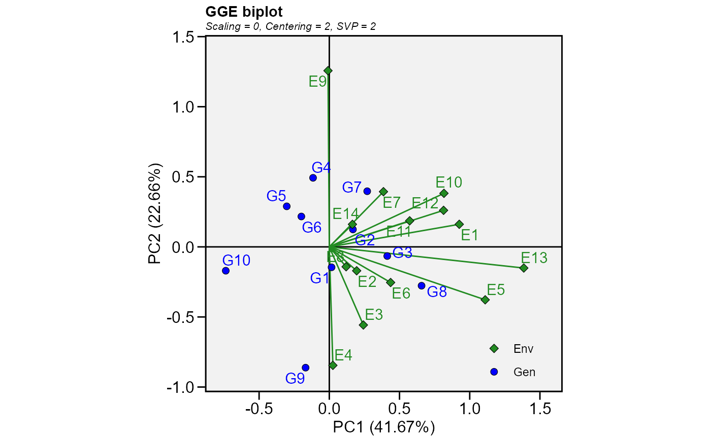
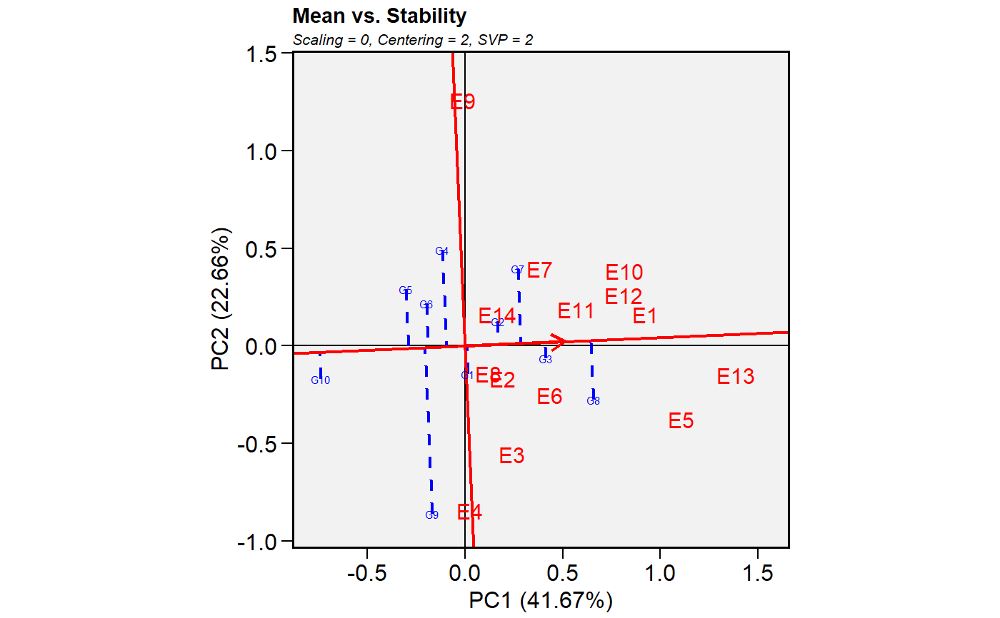

Produces a ggplot2-based GGE-GT-GYT biplot based on a model fitted with the
functions gge(), gtb(), and gytb().
# S3 method for gge plot( x, var = 1, type = 1, sel_env = NA, sel_gen = NA, sel_gen1 = NA, sel_gen2 = NA, shape.gen = 21, shape.env = 23, line.type.gen = "dotted", size.shape = 2.2, size.shape.win = 3.2, size.stroke = 0.3, col.stroke = "black", col.gen = "blue", col.env = "forestgreen", col.line = "forestgreen", col.alpha = 1, col.circle = "gray", col.alpha.circle = 0.5, leg.lab = NULL, size.text.gen = 4, size.text.env = 4, size.text.lab = 12, size.text.win = 4.5, size.line = 0.5, large_label = "deprecated", axis_expand = 1.2, title = TRUE, plot_theme = theme_metan(), ... )
| x | An object with classes |
|---|---|
| var | The variable to plot (useful for |
| type | The type of biplot to produce.
|
| sel_env, sel_gen | The name of the environment (or trait/yield*trait combination) and genotype to examine
when |
| sel_gen1, sel_gen2 | The name of genotypes to compare between when
|
| shape.gen, shape.env | The shape for genotype and environment indication
in the biplot. Defaults to |
| line.type.gen | The line type to highlith the genotype's vectors. Defaults to `line.type.gen == "dotted`. |
| size.shape | The size of the shape (both for genotypes and
environments). Defaults to |
| size.shape.win | The size of the shape for winners genotypes when
|
| size.stroke, col.stroke | The width and color of the border,
respectively. Default to |
| col.gen, col.env, col.line | Color for genotype/environment labels and for
the line that passes through the biplot origin. Defaults to |
| col.alpha | The alpha value for the color. Defaults to |
| col.circle, col.alpha.circle | The color and alpha values for the circle
lines. Defaults to |
| leg.lab | The labs of legend. Defaults to |
| size.text.gen, size.text.env, size.text.lab | The size of the text for genotypes, environments and labels, respectively. |
| size.text.win | The text size to use for winner genotypes where
|
| size.line | The size of the line in biplots (Both for segments and circles). |
| large_label | Deprecated as of metan 1.11.0. Use |
| axis_expand | multiplication factor to expand the axis limits by to enable fitting of labels. Defaults to 1.2 |
| title | Logical values (Defaults to |
| plot_theme | The graphical theme of the plot. Default is
|
| ... | Currently not used. |
A ggplot2-based biplot.
An object of class gg, ggplot.
Yan, W., and M.S. Kang. 2003. GGE biplot analysis: a graphical tool for breeders, geneticists, and agronomists. CRC Press.
Tiago Olivoto tiagoolivoto@gmail.com
# }